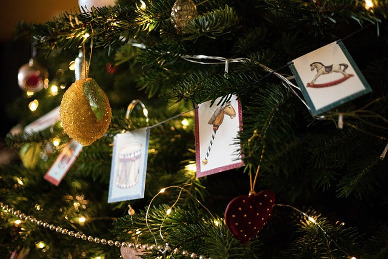

El célebre árbol que adorna nuestras casas en diciembre es llamado de
una u otra forma por mucha gente, pero pinos y abetos tienen notables
diferencias.

Aunque la parte inferior de los gatos puede llegar a balancearse, en
realidad no se trata de una barriga. De hecho, ese trozo de piel,pelo
y grasa es una capa protectora denominada bolsa primordial.

¿Buscando destino para ir de vacaciones? ¿Te apetece realizar una
inmersión en la Edad Media? Entonces apunta los lugares que te
aconsejamos en este artículo.

Los zurdos han sido una minoría históricamente discriminada sobre la
que se ha escrito mucho. Hoy repasamos los mitos, datos y demás
anécdotas sobre la zurdera.